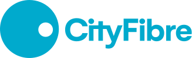

- Get Connected
- Our Company
- Help & Support
Trusted by millions
Our full fibre network delivers fast, reliable broadband and is built to support a new generation of speeds of up to 8.5 Gbps. Enter your postcode to see which broadband providers and speeds are available in your area.
- For Homes
- For Business
The problem
CityFibre builds and operates full-fibre networks across the UK. Its website lets people check whether the network is available at their address.
Conversions on the marketing website were low, and improving them had been highlighted as a priority. I was brought into the project as a UX designer to work on that problem as part of the wider rebrand.
What the research showed
I used Mouseflow and Google Analytics to understand how people used the website and moved through its conversion journey.
The main conversion input sat in the middle of the page. It was an availability checker: visitors entered their postcode to find out whether CityFibre served their address.
The checker was already there, but other parts of the page were drawing attention away from it. Mouseflow recordings showed people scrolling towards animated imagery below the opening section and passing the input on the way.
This gave me a specific part of the experience to address. The page was attracting attention, but that attention was moving past the action visitors needed to take.
What I changed and why
Put the availability check at the centre of the opening screen.
I changed the layout so the opening section filled the screen. I then moved the animation into the background around the checker, leaving the input itself still.
That brought the animation and the availability check together. The part of the page attracting attention now sat alongside the action visitors needed to take.
Before
Animation below the hero drew attention past the checker.
Animated imagery
Draws the scroll
After
A larger hero brought the animation and checker together.

Adapt the striking new brand across CityFibre’s product line.
The new identity had to work across different types of screen. On the marketing website, there was room for large imagery and animation. In the portal, people needed to read labels, use controls and work through more information.

I reviewed how the colours and typography would behave in those settings. I recommended changes to colour combinations to meet AA contrast requirements and adjusted text sizes and weights for readability.
This allowed me to carry the new brand across the product line while keeping the interfaces usable.
Connect the design system to how developers built the product.
Developers needed components they could reuse across the website, portal and campaigns, with clear guidance on how they should behave.
They were using Tailwind, so I structured the Figma design system around that setup. I also improved the implementation documentation to connect the designs with the patterns developers were using in code.
Those shared components and their documentation meant we didn’t have to resolve the same design details each time we moved to another screen.

How I used AI
After launch, I ran a workshop with 40 B2B portal users to understand what needed attention next. Their feedback covered dashboards, incident management, filtering and search.
I used ChatGPT to help group the responses and develop charts. I then checked the analysis against the original feedback to make sure it reflected what people had said.
I brought the findings together in a data sheet and a report built in Figma. This gave leadership a way to review the user ratings, recurring concerns and priorities for further improvements.

Results
- Conversions increased by 90% compared with the month before the rebrand launched. A conversion here means a completed availability check. The figure measures total completions, rather than the percentage of visitors who converted. It was a before-and-after comparison, not a controlled test.
- Design tickets returned by developers fell from 15% to 5%, a reduction of 10 percentage points. Better handovers and clearer implementation guidance helped developers build the designs with fewer corrections.
- A director at Hyperoptic credited my CityFibre work as a key reason for choosing DawsonAndrews over competing agencies. That account led to nine additional employees being hired and helped the agency grow from a small business into a medium-sized one.
What I would do differently
I was working across the website, portal, campaigns and design system while also attending planning meetings and developer calls.
Looking back, I would have asked my manager and project manager for more help with that coordination. Sharing those responsibilities would have made the workload more manageable and given me more time to focus on the design work.
Testimonial
Ben is one of the most talented designers I have worked with.
He leads workshops, gathers requirements and builds strong stakeholder relationships, with a real eye for detail.
He sticks with hard problems, hits deadlines to a high standard, and will stand up for his team. Stakeholders have come to me personally to praise his work and professionalism.

Steven Lloyd-Jones
Scrum Master, CityFibre